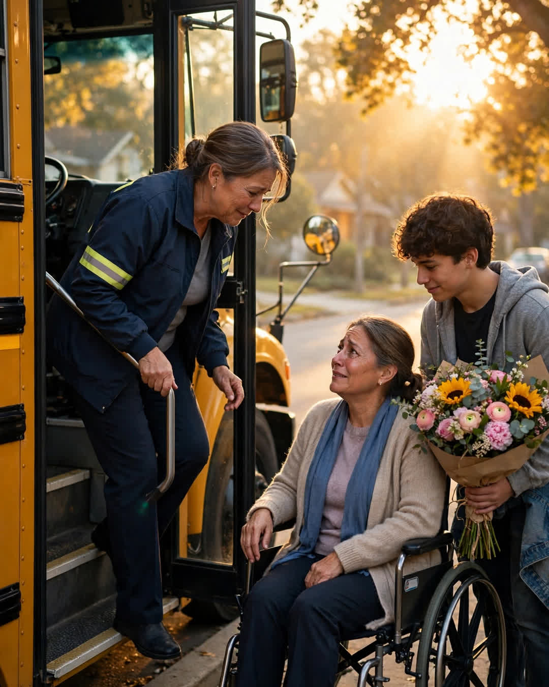

The School Bus Driver
A Clipp Kaili original story

For three years, Bus 12 waited two extra minutes at the corner of Elm every morning, and the driver never once wrote him up for it.
Her name was Mrs. Delgado, but every kid on the route called her Miss D. She had driven that bus for twenty-two years. She knew who needed the front seat for motion sickness, who pretended to forget lunch, and who — like Jonah Reed — was always running down the sidewalk with his backpack half-zipped and his coat in his arms.
Jonah was not lazy. Miss D knew that before anyone told her, because drivers see what teachers sometimes miss. She watched that boy, ten years old, lock his front door carefully each morning, check it twice, then sprint. She saw the curtain move in the window behind him. She understood: somebody inside that house depended on him getting out the door right.
What she learned later was that Jonah's mother had lost the use of her legs in a car accident when he was seven. Every morning before school, that little boy helped her get from bed to her chair, set out her medicine and her water within reach, made her toast, and laid the phone where her hand could find it. Then, and only then, he ran for the bus.
Two minutes. That is all it took. Two minutes of a bus idling at a corner, hazard lights blinking, while a ten-year-old finished being the man of his house.
Other drivers might have reported it. Miss D adjusted her whole route by two minutes and told dispatch the corner had a tricky light.
"You are not late," she told Jonah once, when he climbed up apologizing for the hundredth time. "You are right on time for the most important job you have. We will handle the second one together."
Years passed. Kids graduated off Bus 12 the way they do. Jonah got taller, got quieter, got a job after school. Miss D kept driving. Her knees hurt. Her husband told her to retire. She said she would know when it was time.
On her last route — the final day before her retirement, which the school had kept quiet at her request — she turned onto Elm expecting an empty corner.
It was not empty.
Jonah stood there, seventeen now, broad-shouldered, holding a bouquet too big for his hands. Beside him, in her wheelchair, positioned right at the curb in the morning sun, was his mother. She had gotten a neighbor to help her outside at dawn. She had a card on her lap and tears already running before the doors even opened.
Miss D put the bus in park and sat there with both hands on the wheel, unable to move.
"We waited for you this time," Jonah called, grinning through his own tears. "For three years you waited for me. Mom said today we do it right."
His mother held up the card with both hands. Inside, in careful writing, were the only words she trusted herself to send: "Thank you for never making my son choose between me and his childhood. You carried us both. — The Reeds."
Miss D got down those bus steps slower than she ever had. She hugged that boy. She hugged his mother right there at the curb while twenty kids pressed their faces to the windows and — this part no one who was there will ever forget — every single one of them started clapping.
She still has the photo. It hangs by her front door: a yellow bus, an open road, and a family that was never hers, waving like she was.
The best drivers do not just know the route. They know why a child is running.
This story is a work of fiction, written to touch hearts and bring families closer.
← Back to all stories